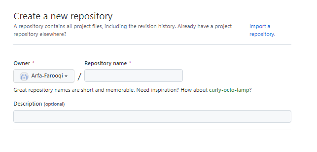
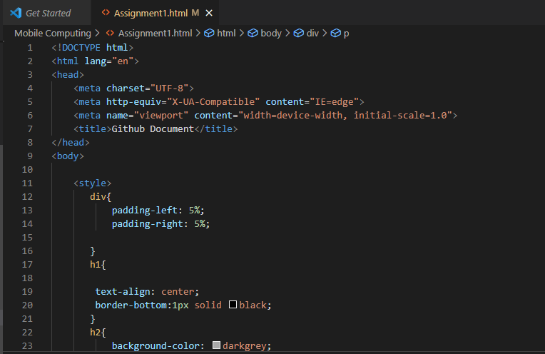
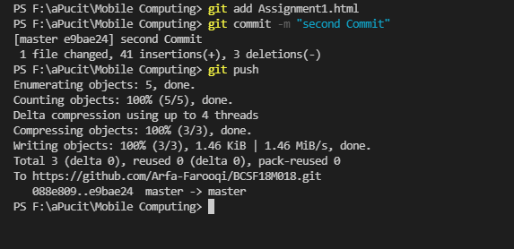
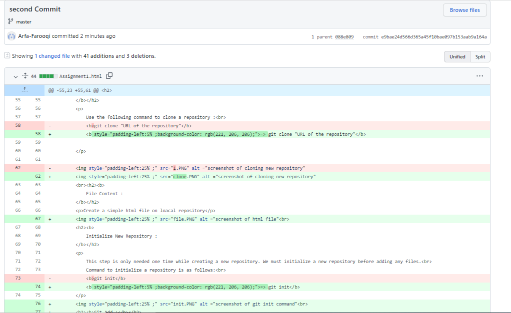
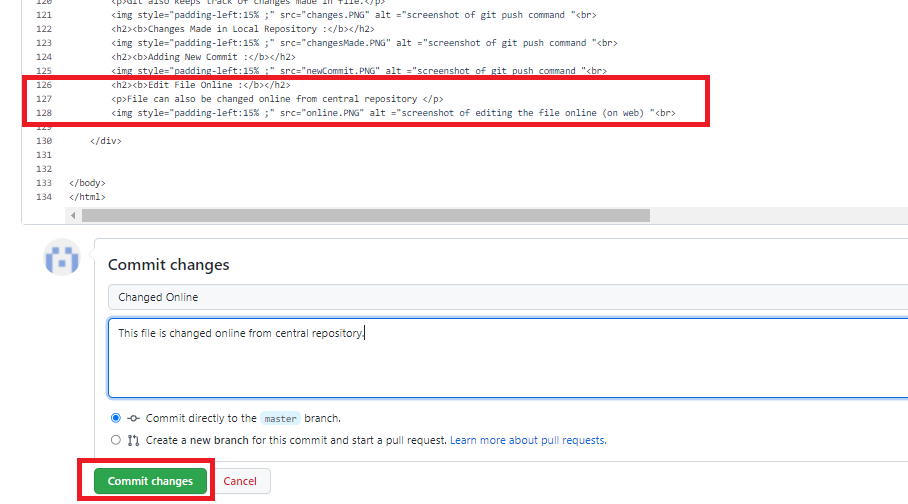

Create an account on github.com. Provide your username, password and email address.
Create a new repository. Provide the details of repository on your account and then copy the url of that repository.

Use the following command to clone a repository :
=> git clone "URL of the repository"
Create a simple html file on loacal repository

This step is only needed one time while creating a new repository. We must initialize a new repository before adding any files.
Command to initialize a repository is as follows:
=> git init
There are two commands for this :
To add all the files of local repository :-
=> git add.
To add a particular file of local repository :-
=> git add File Name
Git also provides a command to commit changes with comment so that they can be tracked easily.
Use the following command to commit :
=> git commit -m "your message"
Git status tells us about the status of the repository.
Command is as follows :
=> git status
This command is used to push the changes to the server. Changes made in local repository are pushed to the central repository.While using the first time in new repository, push requires a destintion of the depository. See the following figure for further clarification.
Command is as folows :
=> git push
For 1st time while ising push command :
After :
Git also keeps track of changes made in file.
File can also be changed online from central repository
This command is used to get changes from Github to Local Repository
Command is as follows :
=> git pull
Sometimes a situation occures that same file gets changed from local repository by one person and also from central repository (online) by another person while working in team. Now same file is being eddited. This creates an issue which is called Merge Conflict.